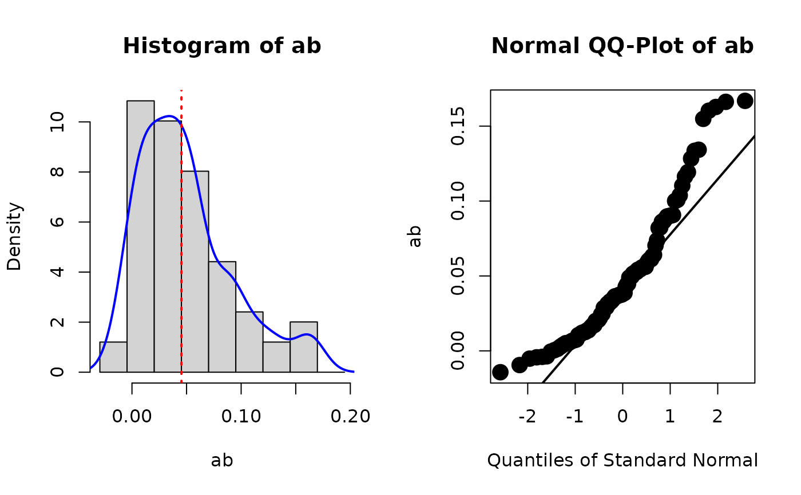

Bootstrap CIs for Standardized Solution
Source:R/standardizedSolution_boot_ci.R
standardizedSolution_boot_ci.RdFunctions for forming bootstrap confidence intervals for the standardized solution.
Usage
standardizedSolution_boot_ci(
object,
level = 0.95,
type = "std.all",
save_boot_est_std = TRUE,
force_run = FALSE,
boot_delta_ratio = FALSE,
...
)
store_boot_est_std(object, type = "std.all", force_run = FALSE, ...)
get_boot_est_std(object)Arguments
- object
A lavaan object, fitted with 'se = "boot"'.
- level
The level of confidence of the confidence intervals. Default is .95.
- type
The type of standard estimates. The same argument of
lavaan::standardizedSolution(), and support all values supported bylavaan::standardizedSolution(). Default is"std.all".- save_boot_est_std
Whether the bootstrap estimates of the standardized solution are saved. If saved, they will be stored in the attribute
boot_est_std. Default isTRUE.- force_run
If
TRUE, will skip checks and run models without checking the estimates. For internal use. Default isFALSE.- boot_delta_ratio
The ratio of (a) the distance of the bootstrap confidence limit from the point estimate to (b) the distance of the delta-method limit from the point estimate. Default is
FALSE.- ...
Other arguments to be passed to
lavaan::standardizedSolution().
Value
The output of
lavaan::standardizedSolution(),
with bootstrap confidence intervals
appended to the right, with class
set to std_solution_boot (since
version 0.1.8.4). It has
a print method
(print.std_solution_boot()) that
can be used to print the standardized
solution in a format similar to
that of the printout of
the summary() of a lavaan::lavaan object.
store_boot_est_std() returns
the fit object set to
object, with the bootstrap values
of standardized solution in the
bootstrap samples, as a matrix,
stored in the
slot external under the name
shh_boot_est_std.
get_boot_est_std() returns a matrix
of the stored bootstrap estimates
of standardized solution. If none is
stored, NULL is returned.
store_boot_est_std() is usually used
with diagnostic functions such
as plot_boot().
Details
standardizedSolution_boot_ci()
receives a
lavaan::lavaan object fitted
with bootstrapping standard errors
requested and forms the confidence
intervals for the standardized
solution.
It works by calling
lavaan::standardizedSolution()
with the bootstrap estimates
of free parameters in each bootstrap sample
to compute the standardized estimates
in each sample.
A more reliable way is to use
function like
lavaan::bootstrapLavaan().
Nevertheless, this simple function is
good enough for some simple scenarios,
and does not require repeating
the bootstrapping step.
store_boot_est_std() computes the
standardized solution for each bootstrap
sample, stores them the
lavaan::lavaan object, and
returns it. These estimates can be used
by other functions, such as plot_boot(),
to examine the
estimates, without the need
to repeat the computation.
get_boot_est_std() retrieves
the bootstrap estimates of the
standardized solution stored by
store_boot_est_std().
Author
Shu Fai Cheung
https://orcid.org/0000-0002-9871-9448.
Originally proposed in an issue at GitHub
https://github.com/simsem/semTools/issues/101#issue-1021974657,
inspired by a discussion at
the Google group for lavaan
https://groups.google.com/g/lavaan/c/qQBXSz5cd0o/m/R8YT5HxNAgAJ.
boot::boot.ci() is used to form the
percentile confidence intervals in
this version.
Examples
library(lavaan)
set.seed(5478374)
n <- 50
x <- runif(n) - .5
m <- .40 * x + rnorm(n, 0, sqrt(1 - .40))
y <- .30 * m + rnorm(n, 0, sqrt(1 - .30))
dat <- data.frame(x = x, y = y, m = m)
model <-
'
m ~ a*x
y ~ b*m
ab := a*b
'
# Should set bootstrap to at least 2000 in real studies
fit <- sem(model, data = dat, fixed.x = FALSE,
se = "boot",
bootstrap = 100)
summary(fit)
#> lavaan 0.6.16 ended normally after 1 iteration
#>
#> Estimator ML
#> Optimization method NLMINB
#> Number of model parameters 5
#>
#> Number of observations 50
#>
#> Model Test User Model:
#>
#> Test statistic 0.020
#> Degrees of freedom 1
#> P-value (Chi-square) 0.887
#>
#> Parameter Estimates:
#>
#> Standard errors Bootstrap
#> Number of requested bootstrap draws 100
#> Number of successful bootstrap draws 100
#>
#> Regressions:
#> Estimate Std.Err z-value P(>|z|)
#> m ~
#> x (a) 0.569 0.325 1.749 0.080
#> y ~
#> m (b) 0.219 0.146 1.495 0.135
#>
#> Variances:
#> Estimate Std.Err z-value P(>|z|)
#> .m 0.460 0.086 5.381 0.000
#> .y 0.570 0.110 5.178 0.000
#> x 0.078 0.012 6.782 0.000
#>
#> Defined Parameters:
#> Estimate Std.Err z-value P(>|z|)
#> ab 0.125 0.126 0.992 0.321
#>
std <- standardizedSolution_boot_ci(fit)
std
#> lhs op rhs label est.std se z pvalue ci.lower ci.upper boot.ci.lower
#> 1 m ~ x a 0.229 0.127 1.800 0.072 -0.020 0.477 -0.041
#> 2 y ~ m b 0.198 0.118 1.684 0.092 -0.032 0.429 -0.024
#> 3 m ~~ m 0.948 0.058 16.325 0.000 0.834 1.062 0.793
#> 4 y ~~ y 0.961 0.047 20.595 0.000 0.869 1.052 0.785
#> 5 x ~~ x 1.000 0.000 NA NA 1.000 1.000 NA
#> 6 ab := a*b ab 0.045 0.040 1.130 0.259 -0.033 0.124 -0.007
#> boot.ci.upper boot.se
#> 1 0.454 0.125
#> 2 0.464 0.115
#> 3 1.000 0.057
#> 4 1.000 0.052
#> 5 NA NA
#> 6 0.164 0.043
# Print in a friendly format with only standardized solution
print(std, output = "text")
#>
#> Standardized Estimates Only
#>
#> Standard errors Bootstrap
#> Confidence interval Bootstrap
#> Confidence Level 95.0%
#> Standardization Type std.all
#> Number of requested bootstrap draws 100
#> Number of successful bootstrap draws 100
#>
#> Regressions:
#> Standardized Std.Err ci.lower ci.upper
#> m ~
#> x (a) 0.229 0.125 -0.041 0.454
#> y ~
#> m (b) 0.198 0.115 -0.024 0.464
#>
#> Variances:
#> Standardized Std.Err ci.lower ci.upper
#> .m 0.948 0.057 0.793 1.000
#> .y 0.961 0.052 0.785 1.000
#> x 1.000 NA NA NA
#>
#> Defined Parameters:
#> Standardized Std.Err ci.lower ci.upper
#> ab 0.045 0.043 -0.007 0.164
#>
# Print in a friendly format with both unstandardized
# and standardized solution
print(std, output = "text", standardized_only = FALSE)
#>
#> Parameter Estimates:
#>
#> Standard errors Bootstrap
#> Number of requested bootstrap draws 100
#> Number of successful bootstrap draws 100
#>
#> Regressions:
#> Estimate Std.Err z-value P(>|z|) ci.lower ci.upper
#> m ~
#> x (a) 0.569 0.325 1.749 0.080 -0.098 1.261
#> y ~
#> m (b) 0.219 0.146 1.495 0.135 -0.020 0.613
#> Standardized ci.std.lower ci.std.upper Std.Err.std
#>
#> 0.229 -0.041 0.454 0.125
#>
#> 0.198 -0.024 0.464 0.115
#>
#> Variances:
#> Estimate Std.Err z-value P(>|z|) ci.lower ci.upper
#> .m 0.460 0.086 5.381 0.000 0.279 0.623
#> .y 0.570 0.110 5.178 0.000 0.345 0.775
#> x 0.078 0.012 6.782 0.000 0.055 0.101
#> Standardized ci.std.lower ci.std.upper Std.Err.std
#> 0.948 0.793 1.000 0.057
#> 0.961 0.785 1.000 0.052
#> 1.000 NA NA NA
#>
#> Defined Parameters:
#> Estimate Std.Err z-value P(>|z|) ci.lower ci.upper
#> ab 0.125 0.126 0.992 0.321 -0.019 0.501
#> Standardized ci.std.lower ci.std.upper Std.Err.std
#> 0.045 -0.007 0.164 0.043
#>
# store_boot_est_std() is usually used with plot_boot()
# First, store the bootstrap estimates of the
# standardized solution
fit_with_boot_std <- store_boot_est_std(fit)
# Second, plot the distribution of the bootstrap estimates of
# standardized 'ab'
plot_boot(fit_with_boot_std, "ab", standardized = TRUE)
